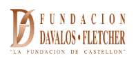

Geografías del comercio tradicional
Memoria, transformación y paisajes relacionales en Castellón de la Plana
Este proyecto documenta y cartografía dos formas singulares del comercio tradicional de Castellón de la Plana: los comercios históricos y los puntos de venta a la porta. La cartografía digital es el resultado de un largo trabajo de campo, entrevistas, observación directa y documentación fotográfica desarrollado entre 2016 y 2026, y visibiliza prácticas comerciales que constituyen un patrimonio vivo: generador de capital social, memoria colectiva e identidad urbana.
El proyecto ha sido financiado por la Fundación Dávalos-Fletcher a través de la Ayuda a la Investigación en Ciencias Sociales y Humanidades, Convocatoria 2025.
Venta a la porta
La venta a la porta es un sistema histórico de venta directa de productos agrícolas en los locales de planta baja de las viviendas urbanas de los propios productores, conectando la huerta periurbana con el tejido urbano de la ciudad. Regulada por el Decreto 201/2017 de la Generalitat Valenciana sobre venta de proximidad, constituye una práctica singular propia de Castellón. A través de este estudio se reconoce a esta antigua práctica comercial, que aún se preserva en las calles de Castellón, un valor como patrimonio relevante de la cultura local. El mapa recoge 38 puntos documentados mediante trabajo de campo sistemático entre 2016 y 2026, de los cuales 20 activos en la fecha de referencia de febrero de 2026.
Comercios históricos
Los comercios históricos son establecimientos comerciales, locales públicos o actividades artesanales que se distinguen por la continuidad de su actividad, la transmisión familiar intergeneracional y su vínculo con la memoria colectiva y la identidad urbana. A efectos de este proyecto, se han considerado comercios históricos los establecimientos con una antigüedad mínima de 40 años. El mapa consta de 31 puntos relevados, no como censo exhaustivo sino como selección razonada, tipológicamente diversa y geográficamente representativa, que incluye establecimientos de barrios periféricos junto a los del centro histórico.
Metodología
- Trabajo de campo y observación directa (2016–2026)
- Entrevistas semiestructuradas con productores y comerciantes
- Inventario fotográfico geolocalizado
- Revisión de fuentes hemerográficas y archivos locales
- Fecha de referencia para el estado de todos los puntos mapeados: febrero de 2026
Tecnologías
- Mapbox GL JS – Mapa interactivo
- Vite – Build tool
- Supercluster – Agrupación de marcadores
- GitHub Pages – Hosting
Equipo
Dirección: Raffaella Rose, Institut Interuniversitari de Geografia, Universitat Jaume I
Equipo: Enrique Montón Chiva, Francisco Javier Soriano Martí, Obdulia Monteserín Abella y Pablo Marco Dols, Universitat Jaume I
Cartografía digital: Vincenzo Patruno, Istat
Diseño gráfico: Veronica Cristofoletti, arquitecta
Dataset: Rose, R. et al. (2026). Geografías del comercio tradicional: Memoria, transformación y paisajes relacionales en Castellón de la Plana - Dataset. Zenodo. https://doi.org/10.5281/zenodo.19978305
Licencia: Creative Commons Atribución-NoComercial 4.0 Internacional (CC BY-NC 4.0)
Institut Interuniversitari de Geografia, Universitat Jaume I · Fundación Dávalos-Fletcher · 2026
